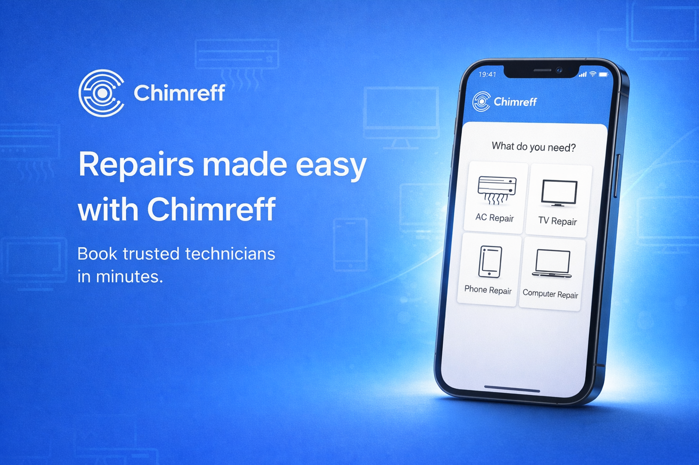
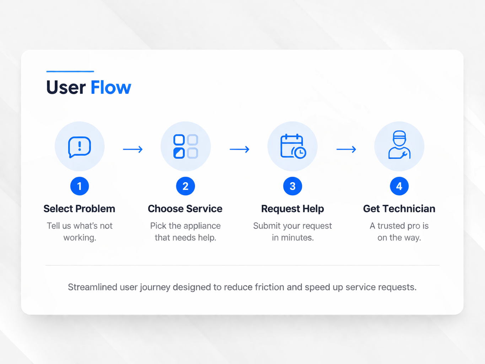

A real-world view of the product showing how users interact with the interface to quickly select services.
Designing a seamless mobile experience that helps users quickly find and book trusted appliance repair services.

Chimreff is a service platform focused on simplifying how users resolve appliance issues. The goal was to remove complexity and guide users through a fast, intuitive process.
A real-world view of the product showing how users interact with the interface to quickly select services.
Users often struggle to describe technical issues or find reliable technicians. This leads to delays, confusion, and poor service experiences.
The app introduces a simple and direct entry point, allowing users to immediately take action.
The experience is broken into clear steps, helping users move from identifying a problem to getting help.

The interface combines clarity with a strong visual identity, building trust and encouraging engagement.
The final experience reduces friction, improves usability, and enables users to quickly move from problem to solution.
Available for collaboration
Chimaconfidence086@gmail.com